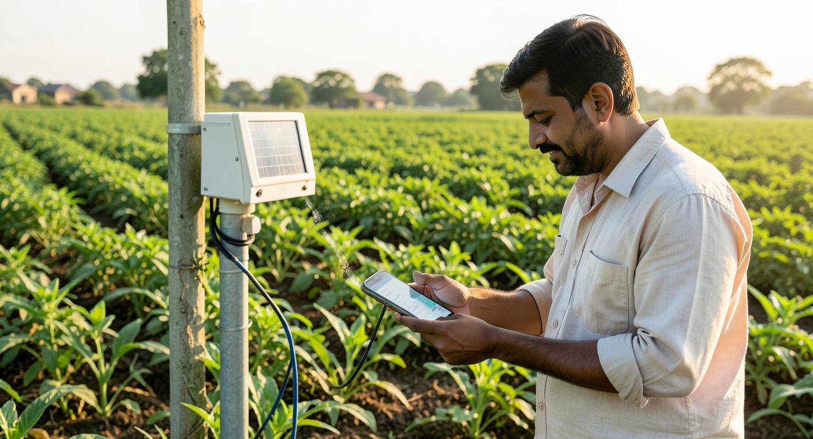
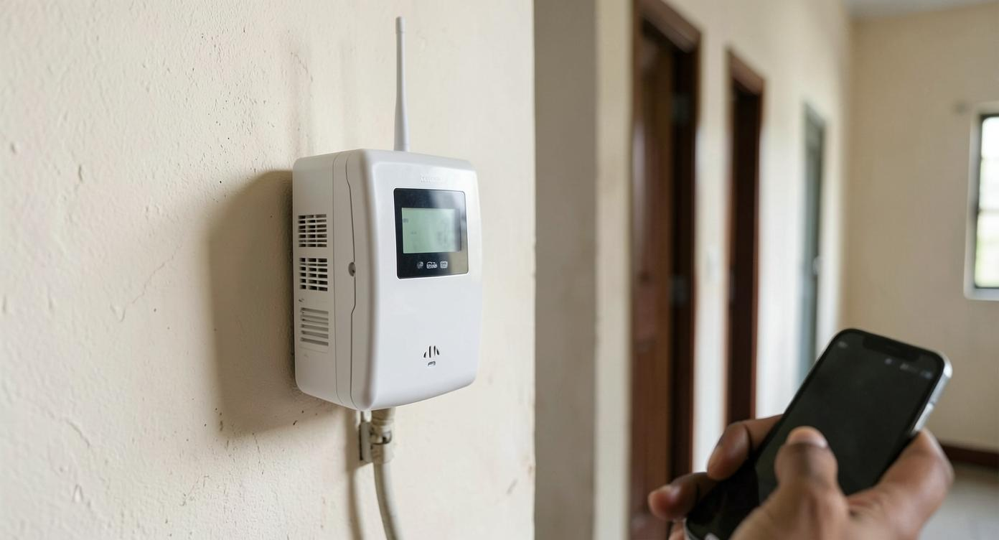

IoT Examples India Me: 8 Real Use Cases aur Setup Guide

IoT यानी Internet of Things आज हर जगह सुनने को मिलता है, पर ज़्यादातर चर्चा यहीं रुक जाती है कि "sensor लगा देंगे और सब smart हो जाएगा"। असल काम वहाँ शुरू होता है जहाँ यह तय करना होता है कि sensor का data किस decision में बदलेगा और उस decision से पैसा या समय कैसे बचेगा।
इस आर्टिकल में मैं भारत में चल रहे आठ असली IoT उपयोग बताऊँगा — खेती से लेकर बिजली मीटर, fleet और factory तक। साथ में एक उदाहरण का पूरा setup, connectivity के विकल्प, security और privacy के नियम, खर्च का हिसाब, शुरुआत के पाँच कदम और वे पाँच गलतियाँ जो ऐसे प्रोजेक्ट्स को बीच में रोक देती हैं।
छोटा जवाब: IoT का मतलब है भौतिक दुनिया के sensor और machines को internet से जोड़कर उनका data इकट्ठा करना और उस पर काम लेना। भारत में सबसे ज़्यादा फायदा वहाँ दिखता है जहाँ बिजली, पानी, ईंधन या मशीन का समय बर्बाद हो रहा हो — जैसे मीटर, cold chain, fleet और पानी की पाइपलाइन।
IoT kya hai, chhota sa
IoT system के चार हिस्से होते हैं — sensor जो नापता है, connectivity जो data भेजती है, platform जो उसे स्टोर और process करता है, और application जो उपयोगकर्ता को दिखाती है। इनमें सबसे महंगा हिस्सा अक्सर चौथा होता है, क्योंकि उसे रोज़ इस्तेमाल होना चाहिए।
एक ज़रूरी बात — IoT में "smart" होना मायने नहीं रखता, "भरोसेमंद" रखता है। जो sensor हर हफ्ते बंद हो जाए या जिसका data गलत हो, उससे बेहतर है कि वह लगाया ही न जाए।
India me 8 asli use cases
1. Smart farming — मिट्टी और सिंचाई
खेत में मिट्टी की नमी, तापमान और बारिश के sensor लगाए जाते हैं। किसान को फोन पर पता चलता है कि किस हिस्से को पानी चाहिए। फायदा सीधा है — पानी और बिजली की बचत, और फसल को ज़रूरत से ज़्यादा सिंचाई से बचाना।
यहाँ सबसे बड़ी चुनौती connectivity है। खेत में मोबाइल सिग्नल कमज़ोर होता है, इसलिए कम बिजली वाले sensor और स्थानीय gateway चुनने पड़ते हैं।
2. Smart meter — बिजली की खपत
बिजली के मीटर से हर घंटे की खपत भेजी जा सकती है, जिससे बिल का अनुमान, चोरी की पहचान और outage की जानकारी आसान होती है। उपभोक्ता को पता चलता है कि कौन सा उपकरण ज़्यादा बिजली खा रहा है।
इस क्षेत्र में data की मात्रा बहुत बड़ी होती है, इसलिए storage और processing का design शुरुआत में ही सोचना पड़ता है।
3. Fleet tracking — गाड़ियों की निगरानी
GPS और ईंधन sensor से पता चलता है कि गाड़ी कहाँ है, कितनी देर रुकी, और ईंधन कहाँ खर्च हो रहा है। डिलीवरी कंपनियों के लिए यह सबसे सीधा फायदा देने वाला उपयोग है, क्योंकि हर गलत रास्ता और हर घंटा पैसा है।
4. Cold chain — दवा और खाने का तापमान
वैक्सीन, दूध और फलों की गाड़ियों में तापमान sensor लगते हैं। तापमान तय सीमा से बाहर जाए तो तुरंत alert आता है, ताकि खराब होने से पहले कदम उठाया जा सके। अस्पतालों और दवा कंपनियों के लिए यह compliance का हिस्सा भी है।
5. Water management — पाइपलाइन और टंकी
नगरपालिका और हाउसिंग सोसाइटी में टंकी का स्तर, पंप का चलना और पाइपलाइन में leakage नापी जा सकती है। पानी की चोरी और leakage अक्सर सबसे बड़ी लागत होती है, और वहीं IoT सबसे ज़्यादा बचत देता है।
6. Health monitoring — घर पर देखभाल
बुज़ुर्गों के लिए पहनने योग्य device दिल की धड़कन, नींद और गिरने की घटना भेज सकते हैं। फायदा तब होता है जब data परिवार या डॉक्टर तक सही समय पर पहुँचे, सिर्फ app में जमा न रहे।
7. Factory — मशीन की सेहत
मशीन की आवाज़, कंपन और तापमान से पता चलता है कि कोई हिस्सा खराब होने वाला है। इसे predictive maintenance कहते हैं। सही समय पर रोकना, अचानक बंद होने से हमेशा सस्ता पड़ता है।
8. Smart lighting — सड़क और परिसर
स्ट्रीट लाइट में motion और ambient light sensor लगाकर बिजली बचाई जाती है, और खराब लाइट का पता दूर बैठे चलाया जा सकता है। नगर निगम के लिए यह आसान शुरुआत है, क्योंकि नतीजा बिजली के बिल में सीधे दिखता है।

Ek example ka poora setup
मान लें हमें तीन टंकियों का पानी का स्तर नापना है और कम होने पर alert भेजना है। यह छोटा project पूरा IoT चक्र सिखा देता है।
- Sensor: हर टंकी पर एक level sensor, जो हर 15 मिनट में माप भेजे।
- Gateway: एक छोटा device जो sensors से data लेकर internet पर भेजे।
- Platform: data स्टोर हो, पुराना data हटे, और नियम चलें।
- नियम: स्तर 20% से नीचे जाए तो WhatsApp alert जाए।
- Dashboard: स्तर, पिछले सात दिन का ग्राफ और alert का इतिहास।
- रखरखाव: battery, signal और sensor की सफाई का शेड्यूल।
| हिस्सा | आम विकल्प | ध्यान दें |
|---|---|---|
| Sensor | Ultrasonic, float, pressure | धूल और नमी में टिकना ज़रूरी |
| Gateway | ESP32, Raspberry Pi, industrial gateway | बिजली जाने पर buffer |
| Connectivity | WiFi, 4G, NB-IoT, LoRaWAN | खपत और range का हिसाब |
| Platform | Cloud IoT service या अपना server | Data retention और cost |
Connectivity ke vikalp
| तरीका | रेंज | कहाँ ठीक है |
|---|---|---|
| WiFi | घर/ऑफिस तक | स्थिर जगह, जहाँ बिजली और router हो |
| Bluetooth LE | कुछ मीटर | पहनने योग्य devices, फोन के साथ |
| LoRaWAN | कई किलोमीटर | खेत, टंकी, स्ट्रीट लाइट |
| NB-IoT | मोबाइल नेटवर्क | मीटर और दूर लगे sensors |
| 4G/5G | शहर और गाँव | कैमरा, गाड़ी, ज़्यादा data |
चुनाव हमेशा data की मात्रा और battery की उम्र से होता है। जो sensor महीने में एक बार data भेजता है, उसके लिए 4G ज़रूरत से ज़्यादा है; जो कैमरा हर सेकंड video भेजता है, उसके लिए LoRaWAN बेकार है।
Security aur privacy ke 6 niyam
- हर device का अपना पहचान और key हो, साझा password न हो।
- Data भेजते समय encryption चालू रखें।
- Device को सिर्फ ज़रूरी network तक पहुँच दें।
- Firmware update की व्यवस्था पहले से रखें।
- केवल ज़रूरी data इकट्ठा करें — जो decision में काम न आए, वह जोखिम है।
- Log और access का रिकॉर्ड रखें, ताकि गड़बड़ होने पर पता चले।
यहाँ एक बात साफ समझें — सस्ते consumer devices अक्सर पुराने firmware के साथ आते हैं और सालों तक update नहीं मिलते। अगर device किसी की जान या बड़े पैसे से जुड़ा है, तो सस्ता विकल्प महंगा पड़ सकता है।
Kharcha aur ROI
IoT का खर्च चार जगह आता है — hardware, connectivity, platform और लोग। सबसे ज़्यादा नज़रअंदाज़ किया जाने वाला हिस्सा चौथा है, यानी वह व्यक्ति जो device लगाए, बैटरी बदले और alert का जवाब दे।
इसीलिए शुरुआत में एक साफ माप तय करें। जैसे "पानी की बर्बादी 15% घटेगी" या "गाड़ी का ईंधन खर्च 8% घटेगा"। जब लक्ष्य संख्या में हो, तो यह तय करना आसान होता है कि project आगे बढ़ाना है या रोकना।
Hardware का एक और छिपा खर्च है बैटरी और replacement। जो sensor हर हफ्ते data भेजता है, उसकी बैटरी साल में बदलनी पड़ सकती है; और अगर sensor ऊँचाई पर या दूर लगा है, तो हर बदली में आदमी और समय लगता है। इसे शुरुआती हिसाब में जोड़ें, वरना तीसरे साल यह खर्च सबसे बड़ा दिखेगा।
छोटे pilot का नियम — पहले 10 devices, तीन महीने, एक साफ लक्ष्य। अगर इतने में फायदा नहीं दिखा, तो 1000 devices लगाने से भी नहीं दिखेगा।
Shuru karne ke 5 kadam
कदम 1 — समस्या चुनें। "Smart city" जैसे बड़े शब्द छोड़ें; एक ऐसी समस्या चुनें जिसका नुकसान हर महीने दिखता हो।
कदम 2 — माप तय करें। कौन सा data, कितनी बार, और किस decision के लिए।
कदम 3 — छोटा pilot चलाएँ। कम devices, असली जगह, असली मौसम।
कदम 4 — dashboard को उपयोगी बनाएँ। सिर्फ ग्राफ नहीं — अगला कदम और ज़िम्मेदार व्यक्ति भी दिखे।
कदम 5 — रखरखाव का plan बनाएँ। बैटरी, cleaning, replacement और firmware update — सबका शेड्यूल और बजट।
Data aur alert ka design
Sensor लगाना आसान है, उसका data उपयोगी बनाना मुश्किल। यहाँ तीन फैसले शुरुआत में लेने चाहिए — कितनी बार मापें, कितने दिन रखें, और किस स्थिति में किसे सूचना जाए।
कितनी बार मापें
हर sensor के लिए यह सोचें कि decision कितनी जल्दी लेना है। पानी की टंकी का स्तर हर 15 मिनट में काफी है; मशीन का कंपन हर सेकंड चाहिए। बिना सोचे हर सेकंड data भेजने से battery, network और storage तीनों पर बोझ बढ़ता है, और जानकारी वही रहती है।
कितने दिन रखें
कच्चा data (raw) हमेशा के लिए रखने की ज़रूरत नहीं होती। एक आम ढाँचा यह है — कच्चा data 30 से 90 दिन, और उसका सारांश (औसत, अधिकतम, घटनाएँ) सालों तक। इससे खर्च काबू में रहता है और पुराना रुझान देखने की सुविधा भी बनी रहती है।
Alert किसे और कब
सबसे बड़ी समस्या alert की बाढ़ है। जब एक ही समस्या के सौ message आते हैं, तो लोग सब अनदेखा करने लगते हैं। इसलिए तीन नियम रखें — एक समस्या के लिए एक alert, कुछ समय तक दोबारा न भेजें, और हर alert में यह लिखा हो कि क्या करना है।
साथ में यह भी तय करें कि alert का जवाब कौन देगा और कब। बिना मालिक वाला alert सिर्फ शोर है।
क्या न रखें
जो data किसी फैसले में नहीं आता, उसे इकट्ठा ही न करें। हर अतिरिक्त field storage, security और compliance का बोझ बढ़ाती है। खासकर व्यक्तिगत जानकारी — नाम, फोन, लोकेशन — तभी लें जब उसके बिना काम न चले।
5 galtiyan jo projects rok deti hain
पहली — technology से शुरुआत करना, समस्या से नहीं। दूसरी — dashboard बनाकर यह तय न करना कि alert का जवाब कौन देगा। तीसरी — connectivity और battery का हिसाब न लगाना। चौथी — security को बाद में देखना। पाँचवीं — pilot की सफलता के बिना बड़े पैमाने पर खरीद लेना।
दूसरी गलती सबसे आम है। बहुत से projects में data सुंदर ग्राफ में दिखता रहता है, पर जब टंकी खाली होती है या मशीन बंद होती है, तब पता चलता है कि alert किसी ने देखा ही नहीं।
मैंने इन projects से क्या सीखा
सबसे बड़ी सीख यह रही कि IoT की सफलता hardware की quality से कम और process से ज़्यादा जुड़ी है। जहाँ alert का मालिक तय था, वहाँ system चला। जहाँ सिर्फ dashboard बना, वहाँ तीन महीने बाद कोई उसे खोलता भी नहीं था।
दूसरी सीख — data की मात्रा कम रखें। जो sensor हर मिनट data भेजता है, उसका 95 प्रतिशत हिस्सा किसी फैसले में नहीं आता, पर storage और battery दोनों खाता है। ज़रूरत के हिसाब से भेजना ज़्यादा समझदारी है।
तीसरी सीख — रखरखाव को शुरुआत से बजट में रखें। जिस project में हमने बैटरी बदलने का शेड्यूल और ज़िम्मेदार व्यक्ति पहले तय किया, वह साल भर बाद भी चल रहा था। जहाँ यह नहीं हुआ, वहाँ आधे device चुपचाप बंद हो गए और किसी को पता नहीं चला।
अक्सर पूछे जाने वाले सवाल
IoT शुरू करने के लिए कितना खर्च लगता है?
छोटे pilot में कुछ हज़ार रुपये के sensors और एक सस्ता gateway काफी हो सकता है। असली खर्च platform, connectivity और रखरखाव में आता है, इसलिए उसे शुरुआत से जोड़कर देखें।
क्या WiFi से काम चल जाएगा?
स्थिर जगह और भरोसेमंद router के साथ अक्सर हाँ। दूर के खेत, टंकी या सड़क पर LoRaWAN या NB-IoT ज़्यादा उपयुक्त रहते हैं।
क्या IoT के लिए cloud ज़रूरी है?
नहीं, छोटे setup में स्थानीय server भी चल सकता है। पर दूर से निगरानी, backup और scale के लिए cloud आसान रहता है।
Data की सुरक्षा कैसे करें?
हर device की अलग key, encrypted connection, सीमित network access और firmware update की व्यवस्था — यही चार बुनियादी कदम हैं।
सबसे पहले कौन सा use case चुनें?
वह जहाँ बर्बादी साफ नापी जा सके और नतीजा जल्दी दिखे — जैसे पानी की टंकी, बिजली का मीटर या गाड़ी का ईंधन।
अगर आप device का data उपयोगकर्ताओं को दिखाना चाहते हैं, तो self-service apps की गाइड काम आएगी। Data कहाँ रहेगा और कौन सा कानून लागू होगा, यह समझने के लिए sovereign cloud वाला आर्टिकल पढ़ें, और पुराने system से data जोड़ने के लिए legacy modernization की गाइड देखें।
आगे पढ़ें: नीति और कार्यक्रमों की जानकारी MeitY पर और IoT security की सिफारिशों के लिए GSMA IoT Security देखें। Hardware और नेटवर्क के विकल्प समय के साथ बदलते हैं, इसलिए खरीदने से पहले ताज़ा जानकारी लें।